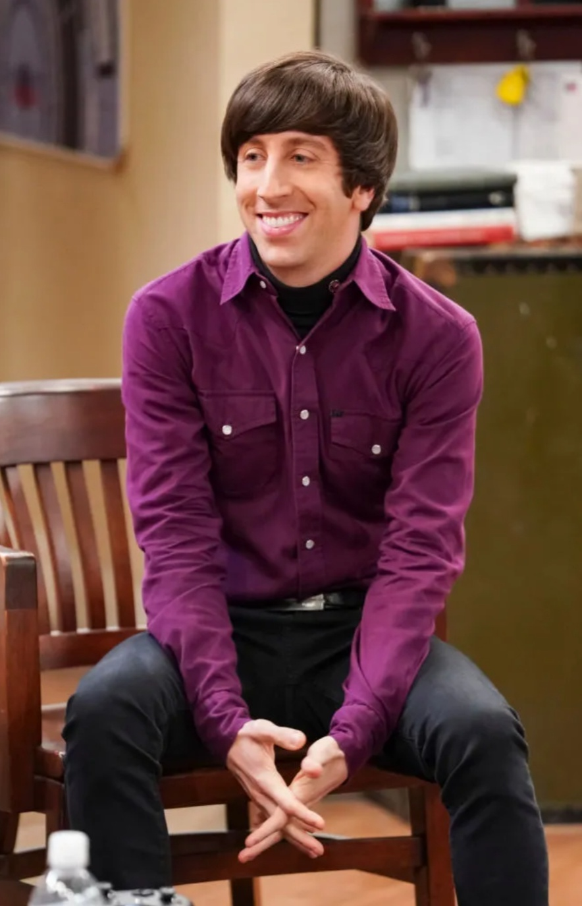
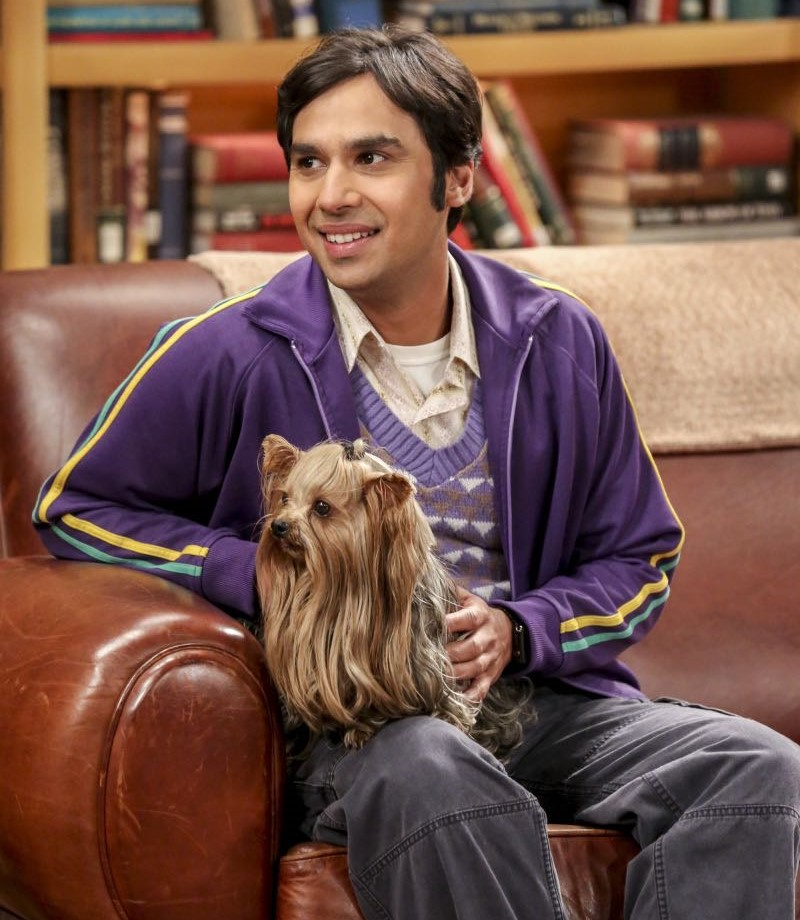

|  |
Howard WolowitzAn aerospace engineer who got his master's degree at the Massachusetts Institute of Technology. Howard is Jewish and lived with his mother, Debbie (Carol Ann Susi). Unlike Sheldon, Leonard, Raj, Bernadette, and Amy, Howard does not hold a doctorate. He trains as an astronaut and goes into space as a payload specialist on the International Space Station. Howard initially fancies himself as a ladies man, but he later starts dating Bernadette, and they get engaged and married. Howard also has a tendency to waste money on toys and argues with Bernadette because of his oddly low income as an engineer and her high income as a pharmaceutical biochemist. |
Team Boys
|  |
Rajesh KoothrappaliA particle astrophysicist originally from New Delhi, India. Initially, Raj had selective mutism, rendering him unable to talk to or be around women unless under the influence of alcohol. Raj also has very feminine tastes and often takes on a stereotypical female role in his friendship with Howard as well as in the group of four men. Raj later dates Lucy (Kate Micucci), who also suffers from social anxiety, but it eventually ends. He later speaks to Penny without alcohol, overcoming his selective mutism. He begins dating Emily Sweeney, and their relationship later becomes exclusive. In the series' final season, Raj has an on-again, off-again engagement with a fellow Indian, a hotel concierge named Anu (Rati Gupta). He also has a Yorkshire Terrier named Cinnamon, given by Howard and Bernadette. |